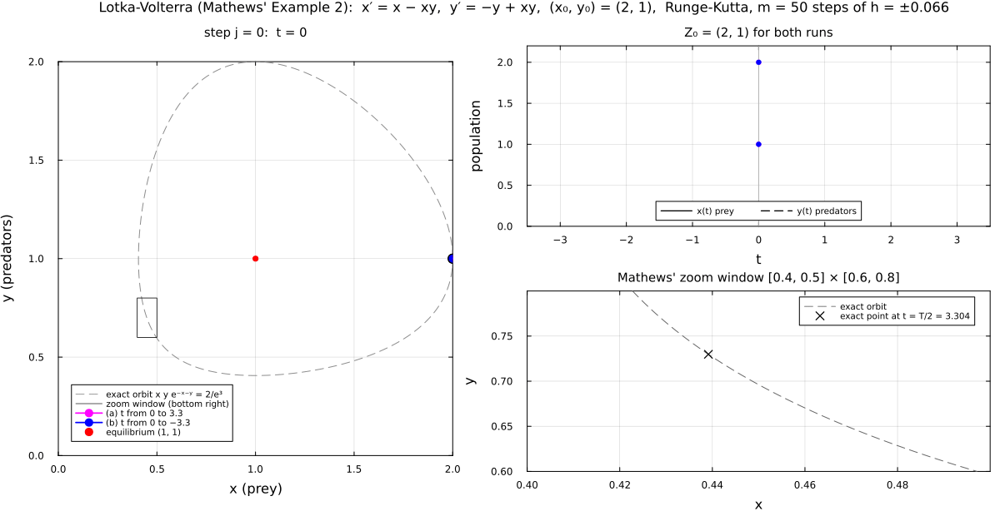
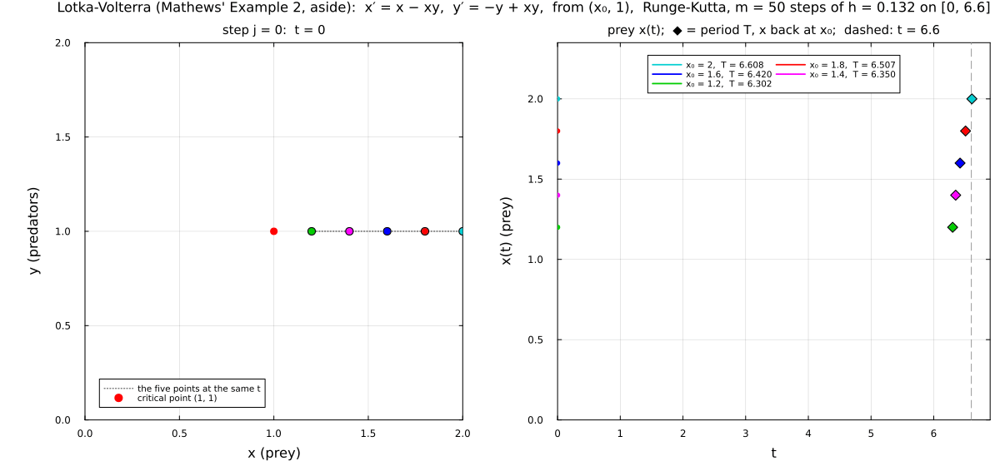
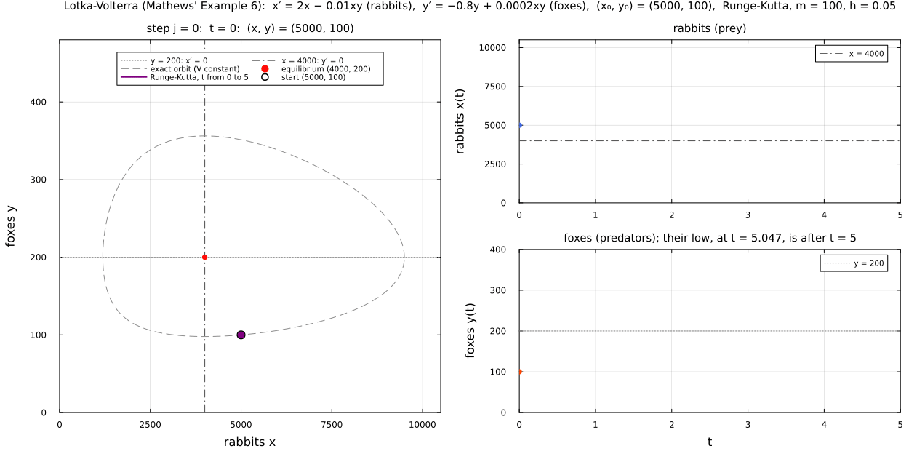

Lotka-Volterra Model
Source inspiration: (Mathew 2000-2019).
Description
The Lotka-Volterra equations are two coupled nonlinear differential equations for a prey population \(x(t)\) and a predator population \(y(t)\):
\[ \frac{dx}{dt} = k_1 x - k_2 x y, \qquad \frac{dy}{dt} = -k_3 y + k_4 x y, \qquad k_1, k_2, k_3, k_4 > 0 . \]
Without predators the prey grow at the rate \(k_1\), and without prey the predators die out at the rate \(k_3\); the products \(x y\) count the encounters between the two species, which cost the prey and feed the predators. Mathews does not try to write \(x(t)\) and \(y(t)\) as formulas. He computes them with the fourth-order Runge-Kutta method in vector form: with \(\mathbf{Z} = (x, y)\), \(\mathbf{F}(t, \mathbf{Z}) = (k_1 x - k_2 x y,\ -k_3 y + k_4 x y)\) and step \(h = (b - a)/m\),
\[ \mathbf{Z}_{j+1} = \mathbf{Z}_j + \tfrac16\left(\mathbf{K}_1 + 2\mathbf{K}_2 + 2\mathbf{K}_3 + \mathbf{K}_4\right), \]
where \(\mathbf{K}_1, \ldots, \mathbf{K}_4\) are \(h\) times \(\mathbf{F}\) evaluated at the start, twice at the midpoint and at the end of the step. The computed points \(\mathbf{Z}_0, \mathbf{Z}_1, \ldots, \mathbf{Z}_m\) trace a curve in the \(xy\)-plane, the phase plane.
For positive starting values other than the equilibrium, the exact curves are closed. Dividing the two equations gives a separable equation for \(dy/dx\), whose solution says that the quantity \(V(x, y) = k_4 x - k_3 \ln x + k_2 y - k_1 \ln y\) keeps its initial value along every solution in the first quadrant. Its level curves are closed loops around the equilibrium \((k_3/k_4,\ k_1/k_2)\), so the populations rise and fall periodically, the predators peaking after the prey. After a scalar warm-up (Example 1), the examples solve the case \(k_1 = k_2 = k_3 = k_4 = 1\) from \((x_0, y_0) = (2, 1)\) numerically and analytically and compare the two, and then follow a population of \(5000\) rabbits and \(100\) foxes.
Animations
Each animation below traces a Runge-Kutta solution in the phase plane, one step of the method (7) per frame, beside the populations against time. In the phase plane the computed points \(\mathbf{Z}_j\) are joined by straight segments, as in Mathews’ graphs, and a large dot marks the current point; the time panels plot the same points against \(t_j\). Where an exact orbit is drawn (gray, dashed), it is the level curve of the conserved quantity (4) through the starting point, computed independently of the Runge-Kutta run, so the run’s distance from it shows the part of its error across the orbit. Periods, extreme values and the times at which they occur come from a reference solution (the Runge-Kutta method with steps of about \(10^{-4}\), crossing times refined by bisection) and agree with the values in the examples below. The last frame of each animation is held for about three seconds.
Mathews’ module links no animation, and his animation archive has none for the Lotka-Volterra model, so all three animations are new, with no Mathews original. Cases 1 and 2 animate the graphs of Example 2 and its aside, in Mathews’ window \([0, 2] \times [0, 2]\) and with his colours, step counts and zoom window; Case 3 animates Example 6, whose program, step count and graphs are lost, so its window and \(m = 100\) are chosen here. Not animated are Example 1, a single equation whose graph is lost; run (c) of Example 2 and the closing run with \(m = 200\), which trace the same loop as Case 1’s two runs together; and Examples 3 to 5, which find the orbit analytically and draw static graphs: the implicit curve (9), which is the dashed curve of Case 1, Example 4’s contour plot of \(x y e^{-x-y}\), and Example 5’s graphs of halves of the orbit.
Julia source scripts that generated these animations are linked under each case.
Case 1 — Example 2, runs (a) and (b): forward and backward from \((2, 1)\), \(m = 50\), \(h = \pm 0.066\)
Behavior: Run (a) (magenta) goes forward from \((2, 1)\), counterclockwise over the top of the orbit, and run (b) (blue) goes backward in time, clockwise over the bottom. Both stay on the dashed exact orbit to plotting accuracy: the largest change in \(V\) along them is \(2.3 \times 10^{-7}\). In the time panel the prey start at their largest value, \(x = 2\); run (a) passes the predators’ peak, \(y = 2\) at \(t = 1.146\), and the prey’s lowest value at \(t = 2.764\), and run (b) passes the predators’ lowest value at \(t = -1.617\). After \(50\) steps the runs end at \((0.438644, 0.731545)\) and \((0.439650, 0.728073)\), Mathews’ printed end points, inside his zoom window \([0.4, 0.5] \times [0.6, 0.8]\). A closer zoom in the last frames shows the two ends \(0.003615\) apart, on either side of the exact point at \(t = \pm T/2 = \pm 3.304\): the runs cover \(6.6\) time units in all, less than the period \(T = 6.608\), so the curve does not close.

Case 2 — Example 2, aside: five orbits from \((x_0, 1)\), \(x_0 = 2.0, 1.8, 1.6, 1.4, 1.2\), \(m = 50\) on \([0, 6.6]\)
Behavior: The five runs start on the line \(y = 1\) and go round the critical point \((1, 1)\) counterclockwise on nested loops, one step of each run per frame, so the five current points always belong to the same time. The smaller the orbit, the shorter its period, from \(T = 6.608\) for \(x_0 = 2\) down to \(T = 6.302\) for \(x_0 = 1.2\), so the inner runs complete a larger fraction of their periods: at \(t = 3.3\) the run from \(x_0 = 1.2\) has gone \(0.524\) of its period and the run from \(x_0 = 2\) only \(0.499\). Round the loop the outer point still leads at that moment, about \(10^\circ\) further round \((1, 1)\) than the inner one, but from \(t \approx 4.1\) the inner points are ahead, in order of size, and by \(t = 6.6\) they lead visibly and the dotted line joining the five points bends. In the right panel each prey curve \(x(t)\) returns to its starting value \(x_0\), its largest, at the period (diamond). By \(t = 6.6\) the four inner runs have passed their periods and overlap the start of their own curves, while the outer one stops \(0.0085\) short of its starting point, since \(6.608 > 6.6\). With \(h = 0.132\) the computed curves are visibly polygonal, but each stays on its orbit: the largest change in \(V\) along the five runs is \(3.7 \times 10^{-6}\).

Case 3 — Example 6, foxes and rabbits: \((x_0, y_0) = (5000, 100)\) on \([0, 5]\), \(m = 100\), \(h = 0.05\)
Behavior: Both populations grow at first. The rabbits peak at \(9498.1\) at \(t = 0.9656\), at the moment the foxes pass \(y = 200\), where \(x' = 0\); the foxes peak at \(356.2\) at \(t = 1.859\), as the falling rabbits pass \(x = 4000\), where \(y' = 0\). In the phase plane the peaks therefore sit on these two lines through the equilibrium \((4000, 200)\), and in the time panels the fox peak comes \(0.8938\) time units after the rabbit peak, the phase lag Mathews asks the reader to notice. The rabbits reach their lowest value, \(1190.2\), at \(t = 3.249\), and are growing again by \(t = 5\); the foxes’ lowest value, \(97.90\) at \(t = 5.047\), lies just beyond Mathews’ interval. At \(t = 5\) the run is at \((3813.6, 97.982)\), short of a full cycle (\(T = 5.267\)), so the trace leaves a gap in the dashed exact orbit between its end and the start \((5000, 100)\). The largest change in \(V\) along the run is \(3.5 \times 10^{-7}\).

The Lotka-Volterra Equations
For constants \(k_1, k_2, k_3, k_4 > 0\) the Lotka-Volterra equations are
\[ \frac{dx}{dt} = k_1 x - k_2 x y, \qquad \frac{dy}{dt} = -k_3 y + k_4 x y, \tag{1} \]
solved with initial values \(x(0) = x_0 > 0\) and \(y(0) = y_0 > 0\).
Equilibrium points
An equilibrium (critical point) is a point where \(dx/dt = 0\) and \(dy/dt = 0\) at once. Writing (1) as \(x(k_1 - k_2 y) = 0\) and \(y(-k_3 + k_4 x) = 0\) shows there are exactly two:
\[ (0, 0) \qquad \text{and} \qquad (x_e, y_e) = \left(\frac{k_3}{k_4},\ \frac{k_1}{k_2}\right). \tag{2} \]
Mathews states that there is one critical point, \((k_3/k_4,\ k_1/k_2)\); that is the only one with both populations positive, but the origin is an equilibrium too.
The Jacobian matrix of the right-hand side of (1) is
\[ J(x, y) = \begin{pmatrix} k_1 - k_2 y & -k_2 x \\ k_4 y & -k_3 + k_4 x \end{pmatrix}. \]
At the origin \(J = \operatorname{diag}(k_1, -k_3)\), with one positive and one negative eigenvalue: the origin is a saddle point, repelling along the \(x\)-axis (prey alone grow) and attracting along the \(y\)-axis (predators alone die out). At \((x_e, y_e)\)
\[ J(x_e, y_e) = \begin{pmatrix} 0 & -k_2 k_3/k_4 \\ k_1 k_4/k_2 & 0 \end{pmatrix}, \qquad \lambda = \pm\, i\sqrt{k_1 k_3}, \tag{3} \]
so the linearised system rotates around \((x_e, y_e)\) with angular frequency \(\sqrt{k_1 k_3}\), that is with period \(2\pi/\sqrt{k_1 k_3}\). Purely imaginary eigenvalues alone do not decide what the nonlinear system does near the equilibrium; the conserved quantity below does.
A conserved quantity and closed orbits
Along every solution of (1) with \(x_0, y_0 > 0\) the function
\[ V(x, y) = k_4 x - k_3 \ln x + k_2 y - k_1 \ln y \tag{4} \]
is constant. Equivalently, \(x^{k_3}\, y^{k_1}\, e^{-k_4 x - k_2 y}\) is constant.
Proof. The two axes are solution curves of (1) (\(x = 0\) gives \(dx/dt = 0\), \(y = 0\) gives \(dy/dt = 0\)), so a solution that starts in the open first quadrant stays in it and \(\ln x\), \(\ln y\) are defined. By the chain rule
\[ \frac{dV}{dt} = \left(k_4 - \frac{k_3}{x}\right)(k_1 x - k_2 x y) + \left(k_2 - \frac{k_1}{y}\right)(-k_3 y + k_4 x y) = (k_4 x - k_3)(k_1 - k_2 y) + (k_2 y - k_1)(k_4 x - k_3) = 0. \qquad \blacksquare \]
Every solution of (1) that starts at a point \((x_0, y_0)\) with \(x_0, y_0 > 0\), other than the equilibrium \((x_e, y_e)\), is periodic: its orbit in the phase plane is a closed curve around \((x_e, y_e)\), traversed counterclockwise.
Why. The gradient of \(V\) is \((k_4 - k_3/x,\ k_2 - k_1/y)\), which vanishes only at \((x_e, y_e)\), and its Hessian \(\operatorname{diag}(k_3/x^2,\ k_1/y^2)\) is positive definite, so \(V\) is strictly convex on the quadrant with its only minimum at the equilibrium. Since \(V \to \infty\) as \(x\) or \(y\) tends to \(0\) or to \(\infty\), each level set \(V = V(x_0, y_0)\) above the minimum is a single closed curve around \((x_e, y_e)\). The solution stays on that curve, and the curve holds no equilibrium, so the solution keeps moving round it and returns to its starting point after a finite time \(T\). Below the equilibrium (\(y < y_e\)) the prey increase, so the motion is counterclockwise.
For a periodic solution of (1) with period \(T\),
\[ \frac1T \int_0^T x(t)\,dt = \frac{k_3}{k_4} = x_e, \qquad \frac1T \int_0^T y(t)\,dt = \frac{k_1}{k_2} = y_e . \tag{5} \]
Proof. From (1), \(\dfrac{d}{dt}\ln y = -k_3 + k_4 x\). Integrating over one period, the left side gives \(\ln y(T) - \ln y(0) = 0\), so \(0 = -k_3 T + k_4 \int_0^T x\,dt\). The same argument with \(\dfrac{d}{dt}\ln x = k_1 - k_2 y\) gives the average of \(y\). \(\blacksquare\)
The period itself depends on the orbit. For small orbits around \((x_e, y_e)\) it approaches the linearised value \(2\pi/\sqrt{k_1 k_3}\) from (3); in Example 2 and Example 6 the computed periods of the larger orbits exceed it.
Predator-Prey Model
The study of interacting populations goes back to two independently published works by Alfred James Lotka (1880–1949) and Vito Volterra (1860–1940). Let \(x(t)\) be the number of prey (rabbits) and \(y(t)\) the number of predators (foxes). The prey have ample food and reproduce with birth rate \(c_1\) and death rate \(c_2\); successful hunting by the predators removes a further \(k_2\, y x\) prey per unit time, proportional to the number of encounters. Combining the three terms,
\[ \frac{dx}{dt} = c_1 x - c_2 x - k_2\, y x = (c_1 - c_2)\,x - k_2\, x y, \]
and the substitution \(k_1 = c_1 - c_2\) (the net growth rate of the prey) gives
\[ \frac{dx}{dt} = k_1 x - k_2 x y . \]
The predators’ birth rate is proportional to their food supply, \(k_4 x\), and their death rate is \(k_3\), so
\[ \frac{dy}{dt} = -k_3 y + k_4 x y . \]
These are the Lotka-Volterra equations (1). In this setting the equilibrium (2) is the pair of population sizes at which neither species changes, and (5) says that over each cycle the populations average exactly those sizes.
The Runge-Kutta Method
One equation
Mathews solves the equations with the classical fourth-order Runge-Kutta method. For the initial value problem \(y' = f(t, y)\), \(y(a) = \alpha\), on \(a \le t \le b\), divide \([a, b]\) into \(m\) steps of length \(h = (b - a)/m\), set \(t_j = a + jh\) and \(y_0 = \alpha\), and compute
\[ \begin{aligned} K_1 &= h\, f(t_j,\ y_j), \\ K_2 &= h\, f\!\left(t_j + \tfrac{h}{2},\ y_j + \tfrac{K_1}{2}\right), \\ K_3 &= h\, f\!\left(t_j + \tfrac{h}{2},\ y_j + \tfrac{K_2}{2}\right), \\ K_4 &= h\, f(t_j + h,\ y_j + K_3), \\ y_{j+1} &= y_j + \tfrac16\left(K_1 + 2K_2 + 2K_3 + K_4\right), \end{aligned} \qquad j = 0, 1, \ldots, m - 1. \tag{6} \]
Mathews names the four slopes \(k_1, \ldots, k_4\), the same letters as the model constants in (1); this page writes them as capitals. The result is a discrete set of points \((t_j, y_j)\) that approximate the solution, not a formula. For a smooth solution the error at a fixed \(t\) is \(O(h^4)\), so halving \(h\) divides it by about \(16\) (a general result for sufficiently smooth \(f\); Example 1 checks it). The Runge-Kutta method page treats the method in detail.
Systems of two equations
The method extends to a system
\[ x' = f_1(t, x, y),\quad x(a) = \alpha, \qquad y' = f_2(t, x, y),\quad y(a) = \beta, \qquad a \le t \le b, \]
by applying (6) to the vector \(\mathbf{Z} = (x, y)\) and the vector function \(\mathbf{F}(t, \mathbf{Z}) = \bigl(f_1(t, x, y),\ f_2(t, x, y)\bigr)\):
\[ \begin{aligned} \mathbf{K}_1 &= h\,\mathbf{F}(t_j,\ \mathbf{Z}_j), & \mathbf{K}_2 &= h\,\mathbf{F}\!\left(t_j + \tfrac{h}{2},\ \mathbf{Z}_j + \tfrac{\mathbf{K}_1}{2}\right), \\ \mathbf{K}_3 &= h\,\mathbf{F}\!\left(t_j + \tfrac{h}{2},\ \mathbf{Z}_j + \tfrac{\mathbf{K}_2}{2}\right), & \mathbf{K}_4 &= h\,\mathbf{F}(t_j + h,\ \mathbf{Z}_j + \mathbf{K}_3), \end{aligned} \]
\[ \mathbf{Z}_{j+1} = \mathbf{Z}_j + \tfrac16\left(\mathbf{K}_1 + 2\mathbf{K}_2 + 2\mathbf{K}_3 + \mathbf{K}_4\right), \qquad \mathbf{Z}_0 = (\alpha, \beta). \tag{7} \]
This is the one-dimensional method in “vector form”: \(f\) is replaced by \(\mathbf{F}\), and both components of each \(\mathbf{K}_i\) are computed before the next one. A negative \(b\) (with \(a = 0\)) gives a negative \(h\) and integrates backward in time. Mathews’ subroutine returns only the points \(\mathbf{Z}_j\), which are joined by straight segments to draw the orbit.
Example 1 — A single equation, \(y' = t^2 - y\)
Problem. Solve \(y' = t^2 - y\), \(y(0) = 1\), over \([0, 10]\) with the Runge-Kutta method.
Only the text of this example’s solution page survives: the images holding Mathews’ program, output and graph are lost. The image sizes of his lost output table, \(51\) pairs of \(t\) and \(y\) entries with a shorter \(t\) entry in every fifth pair (the integers \(0., 1., \ldots\)), indicate \(m = 50\) steps, \(h = 0.2\), and that is used here. Whether Mathews compared with the exact solution cannot be told from what survives; this page does. The equation is linear, and
\[ y(t) = t^2 - 2t + 2 - e^{-t} \]
satisfies it: \(y' = 2t - 2 + e^{-t} = t^2 - y\), and \(y(0) = 2 - 1 = 1\).
Step 1 (\(t_0 = 0\), \(y_0 = 1\), \(h = 0.2\)):
\[ \begin{aligned} K_1 &= 0.2\,(0^2 - 1) = -0.2, \\ K_2 &= 0.2\,\bigl(0.1^2 - (1 - 0.1)\bigr) = -0.178, \\ K_3 &= 0.2\,\bigl(0.1^2 - (1 - 0.089)\bigr) = -0.1802, \\ K_4 &= 0.2\,\bigl(0.2^2 - (1 - 0.1802)\bigr) = -0.15596, \\ y_1 &= 1 + \tfrac16\bigl(-0.2 - 0.356 - 0.3604 - 0.15596\bigr) = 0.8212733, \end{aligned} \]
against the exact \(y(0.2) = 0.8212692\).
Steps 2 to 50 repeat (6). Every fifth point:
| \(t_j\) | \(y_j\) (RK4, \(h = 0.2\)) | exact \(y(t_j)\) | error \(y_j - y(t_j)\) |
|---|---|---|---|
| 0 | 1.000000 | 1.000000 | 0 |
| 1 | 0.632138 | 0.632121 | \(1.75 \times 10^{-5}\) |
| 2 | 1.864692 | 1.864665 | \(2.75 \times 10^{-5}\) |
| 3 | 4.950246 | 4.950213 | \(3.26 \times 10^{-5}\) |
| 4 | 9.981719 | 9.981684 | \(3.50 \times 10^{-5}\) |
| 5 | 16.993298 | 16.993262 | \(3.60 \times 10^{-5}\) |
| 6 | 25.997558 | 25.997521 | \(3.65 \times 10^{-5}\) |
| 7 | 36.999125 | 36.999088 | \(3.66 \times 10^{-5}\) |
| 8 | 49.999701 | 49.999665 | \(3.67 \times 10^{-5}\) |
| 9 | 64.999913 | 64.999877 | \(3.68 \times 10^{-5}\) |
| 10 | 81.999991 | 81.999955 | \(3.68 \times 10^{-5}\) |
Verification. Over all \(51\) points the error is positive after \(t = 0\) and never decreases, levelling off at \(3.68 \times 10^{-5}\) at \(t = 10\). Repeating the run with other step counts shows the fourth-order behaviour:
| \(m\) | \(h\) | error at \(t = 10\) | ratio to the next row |
|---|---|---|---|
| 25 | 0.4 | \(6.47 \times 10^{-4}\) | 17.6 |
| 50 | 0.2 | \(3.68 \times 10^{-5}\) | 16.8 |
| 100 | 0.1 | \(2.19 \times 10^{-6}\) | 16.4 |
| 200 | 0.05 | \(1.33 \times 10^{-7}\) |
Each halving of \(h\) divides the error by a factor approaching \(16 = 2^4\).
Example 2 — The Lotka-Volterra system with \(k_1 = k_2 = k_3 = k_4 = 1\)
Problem. Solve
\[ x' = x - xy, \quad x(0) = 2, \qquad y' = -y + xy, \quad y(0) = 1, \tag{8} \]
with the Runge-Kutta method over (a) \(0 \le t \le 3.3\), (b) \(-3.3 \le t \le 0\), (c) \(0 \le t \le 6.6\). Does the solution form an orbit?
Here \(\mathbf{F}(t, x, y) = (x - xy,\ -y + xy)\), the equilibria are \((0, 0)\) and \((1, 1)\), and the conserved quantity (4) is \(V(x, y) = x - \ln x + y - \ln y\), with \(V(2, 1) = 3 - \ln 2 = 2.306853\). Mathews uses \(m = 50\) steps in (a) and (b) and \(m = 100\) in (c), so \(h = \pm 0.066\) throughout, and plots the orbits in the window \([0, 2] \times [0, 2]\).
Step 1 of (a) (\(h = 3.3/50 = 0.066\), \(\mathbf{Z}_0 = (2, 1)\)):
\[ \begin{aligned} \mathbf{K}_1 &= 0.066\,\mathbf{F}(2, 1) = (0,\ 0.066), \\ \mathbf{K}_2 &= 0.066\,\mathbf{F}(2,\ 1.033) = (-0.004356,\ 0.068178), \\ \mathbf{K}_3 &= 0.066\,\mathbf{F}(1.997822,\ 1.034089) = (-0.0044948,\ 0.0681012), \\ \mathbf{K}_4 &= 0.066\,\mathbf{F}(1.9955052,\ 1.0681012) = (-0.0089692,\ 0.0701778), \\ \mathbf{Z}_1 &= (2, 1) + \tfrac16\bigl(\mathbf{K}_1 + 2\mathbf{K}_2 + 2\mathbf{K}_3 + \mathbf{K}_4\bigr) = (1.9955549,\ 1.0681227). \end{aligned} \]
A reference solution (an adaptive eighth-order integrator with tolerance \(10^{-13}\)) gives \((1.9955549,\ 1.0681228)\) at \(t = 0.066\). The prey begin to fall and the predators to rise, since \(y_0 = 1\) sits exactly at the level where \(x' = 0\).
Results. The last point of each run, compared with the reference solution:
| Run | interval | \(m\) | RK4 end point | reference | end-point error (distance) |
|---|---|---|---|---|---|
| (a) | \([0, 3.3]\) | 50 | \((0.438644,\ 0.731545)\) | \((0.438644,\ 0.731545)\) | \(2.1 \times 10^{-7}\) |
| (b) | \([0, -3.3]\) | 50 | \((0.439650,\ 0.728073)\) | \((0.439650,\ 0.728073)\) | \(1.6 \times 10^{-7}\) |
| (c) | \([0, 6.6]\) | 100 | \((1.999928,\ 0.991553)\) | \((1.999928,\ 0.991553)\) | \(7.6 \times 10^{-7}\) |
These agree with Mathews’ printed end points \((0.438644, 0.731545)\), \((0.43965, 0.728073)\) and \((1.99993, 0.991553)\). The largest change in \(V\) along any of the three runs is \(2.30 \times 10^{-7}\).
Do the two curves join up? Run (a) goes forward from \((2, 1)\) counterclockwise through the top of the orbit; run (b) goes backward from \((2, 1)\) through the bottom. Mathews draws them together and then zooms to the window \([0.4, 0.5] \times [0.6, 0.8]\), where their ends do not meet: they are \(0.0036\) apart. The end-point errors of runs (a) and (b) are about \(2 \times 10^4\) times smaller than that gap. The gap is there because the orbit’s period is \(T = 6.608483\), so the two half-runs of length \(3.3\) together cover \(6.6 < T\); the point halfway round, at \(t = T/2 = 3.304241\), is \((0.439145,\ 0.729806)\), between the two end points. For the same reason run (c), over \([0, 6.6]\), stops just short of its starting point, at \((1.999928,\ 0.991553)\).
Closing the orbit. Mathews then runs \(m = 200\) steps over \([0,\ 6.6084827203]\) and arrives at \((2., 1.)\); the recomputed end point is \((1.9999999987,\ 1.0000000000)\). The true period, computed in 30-digit arithmetic, is
\[ T = 6.6084826712\ldots, \]
which agrees with Mathews’ interval length to \(5 \times 10^{-8}\); at his \(b\) the exact solution is at \((2,\ 1.00000005)\). The orbit is a closed curve, and its extreme points are
| point on the orbit | time \(t\) | |
|---|---|---|
| \((2, 1)\), largest \(x\) | \(0\) and \(T\) | start |
| \((1, 2)\), largest \(y\) | \(1.1465\) | predators peak |
| \((0.40638, 1)\), smallest \(x\) | \(2.7636\) | prey at their lowest |
| \((1, 0.40638)\), smallest \(y\) | \(4.9914\) | predators at their lowest |
Because all four constants equal \(1\), \(V\) is symmetric in \(x\) and \(y\), and so is the orbit: it is symmetric about the line \(y = x\), and \(x\) and \(y\) both range over \([0.40638, 2]\), where \(0.40638\) is the smaller root of \(x e^{-x} = 2/e^2\). Over one period the averages of \(x\) and \(y\) both equal \(1\) to \(10^{-13}\), as (5) predicts. Mathews remarks that there is no known formula for the solution as a function of \(t\); Example 3 shows that the orbit itself does have an equation.
Aside — several orbits around the equilibrium
Mathews’ aside runs \(m = 50\) steps over \([0, 6.6]\) from \((x_0, 1)\) with \(x_0 = 2.0, 1.8, 1.6, 1.4, 1.2\), draws the five curves in \([0, 2] \times [0, 2]\) and marks the critical point \((k_3/k_4,\ k_1/k_2) = (1, 1)\). The curves are nested loops around \((1, 1)\), one for each level of \(V\):
| \(x_0\) | \(V(x_0, 1)\) | period \(T\) | RK4 point at \(t = 6.6\) (\(m = 50\)) | distance from start |
|---|---|---|---|---|
| 2.0 | 2.306853 | 6.608483 | \((1.999927,\ 0.991542)\) | 0.0085 |
| 1.8 | 2.212213 | 6.507331 | \((1.793681,\ 1.076731)\) | 0.077 |
| 1.6 | 2.129996 | 6.420043 | \((1.584036,\ 1.112948)\) | 0.114 |
| 1.4 | 2.063528 | 6.349886 | \((1.382142,\ 1.103574)\) | 0.105 |
| 1.2 | 2.017678 | 6.301712 | \((1.189257,\ 1.060336)\) | 0.061 |
For these five orbits the period grows with the size of the orbit, and all exceed the linearised period \(2\pi = 6.283185\) from (3) (for \(x_0 = 1.01\) it is \(6.283237\)). Since \(6.6\) is longer than every period except the first, the four inner curves run past their starting point and overlap themselves slightly, while the outer one stops just short. The largest change in \(V\) along the five runs is \(3.71 \times 10^{-6}\) (for \(x_0 = 2.0\)), so each computed curve lies on its closed orbit to plotting accuracy.
Example 3 — The orbit as a separable equation
Problem. For the system (8), combine the two differential equations into a separable first-order equation and solve it.
Step 1. In Leibniz notation, \(\dfrac{dx}{dt} = x - xy\) and \(\dfrac{dy}{dt} = -y + xy\). Divide the second by the first, using \(\dfrac{dy/dt}{dx/dt} = \dfrac{dy}{dx}\):
\[ \frac{dy}{dx} = \frac{-y + xy}{x - xy} = \frac{y\,(x - 1)}{x\,(1 - y)} . \]
Step 2. Separate the variables:
\[ \frac{1 - y}{y}\,dy = \frac{x - 1}{x}\,dx . \]
Step 3. Integrate both sides, writing the constant of integration as \(\ln c\):
\[ \ln y - y = x - \ln x + \ln c . \]
Step 4. Collect the logarithms, \(\ln x + \ln y - x - y = \ln c\), and exponentiate:
\[ x\,y\,e^{-x-y} = c . \]
Step 5. The curve passes through the initial point \((2, 1)\), so \(c = 2 \cdot 1 \cdot e^{-3} = 2/e^3 = 0.0995741\). The orbit is the curve
\[ x\,y\,e^{-x-y} = \frac{2}{e^3}. \tag{9} \]
Mathews graphs (9) with an implicit plot in the window \([0, 2] \times [0, 2]\); it is the closed loop of Example 2.
Verification. Equation (9) is (4) with every \(k_i = 1\): \(V(x, y) = x - \ln x + y - \ln y = -\ln\bigl(x y e^{-x-y}\bigr)\), so (9) says \(V(x, y) = 3 - \ln 2\). The general separation, with arbitrary \(k_i\), gives the constant \(x^{k_3} y^{k_1} e^{-k_4 x - k_2 y}\) of (4) in the same way.
Example 4 — The numerical and analytic solutions agree
Problem. For the system (8), show that the numerical solution of Example 2 and the analytic solution of Example 3 agree. (Mathews’ statement says “the numerical solution in Example 3 and the analytic solution in Example 4”; the numerical solution is the one of Example 2 and the implicit curve the one of Example 3.)
Mathews places the Runge-Kutta orbit with \(m = 200\) steps over \([0,\ 6.6084827203]\) beside the implicit plot of (9), both in \([0, 2] \times [0, 2]\), and then draws one over the other, where the two curves coincide.
Verification. Substituting the \(201\) Runge-Kutta points into the left side of (9):
\[ \max_{0 \le j \le 200} \bigl|\, x_j y_j e^{-x_j - y_j} - 2/e^3 \bigr| = 1.4 \times 10^{-9}, \]
a relative deviation of \(1.4 \times 10^{-8}\). For the coarser runs of Example 2 the largest deviation is \(2.3 \times 10^{-8}\) (runs (a) and (c)) and \(8.3 \times 10^{-9}\) (run (b)). The numerical points lie on the analytic curve to far better than plotting accuracy.
Mathews also draws a contour plot of \(G(x, y) = x y e^{-x-y}\) over \([0, 2] \times [0, 2]\). Each level curve \(G = c\) with \(0 < c < e^{-2}\) is an orbit of (8); \(G\) takes its largest value \(e^{-2} = 0.135335\) at the equilibrium \((1, 1)\), and the orbit of Examples 2 and 3 is the level \(c = 2/e^3 = 0.0995741\).
Example 5 — Solving the orbit for \(y\)
Problem. For the system (8) the implicit solution is \(x y e^{-x-y} = 2/e^3\). Can \(y\) be solved as a function of \(x\)?
Step 1. Write (9) as \(y e^{-y} = \dfrac{2 e^{x-3}}{x}\), that is \((-y)\,e^{-y} = -\dfrac{2 e^{x-3}}{x}\). The equation \(w e^{w} = z\) is solved by the Lambert \(W\) function, \(w = W(z)\) (Mathematica’s ProductLog), so
\[ y = -W\!\left(-\frac{2e^{x-3}}{x}\right). \tag{10} \]
Step 2. For real \(w\), \(w e^w = z\) has real solutions only when \(z \ge -1/e\), and two of them when \(-1/e < z < 0\): the principal branch \(W_0(z) \in (-1, 0)\) and the lower branch \(W_{-1}(z) < -1\). Here \(z = -2e^{x-3}/x \ge -1/e\) exactly when \(x e^{-x} \ge 2/e^2\), that is for
\[ 0.40638 \le x \le 2 . \]
At both ends \(z = -1/e\) and \(W = -1\), so \(y = 1\): these are the leftmost and rightmost points \((0.40638, 1)\) and \((2, 1)\) of the orbit.
Step 3. Mathematica’s Solve returns the principal branch, \(y = -W_0\bigl(-2e^{x-3}/x\bigr)\), which Mathews plots for \(0.40638 \le x \le 2\). Since \(W_0 \in [-1, 0)\), this gives \(y \le 1\): the lower half of the orbit. Mathews concludes that only the lower half of the curve can be solved explicitly. In fact the upper half is the other branch, \(y = -W_{-1}\bigl(-2e^{x-3}/x\bigr) \ge 1\), which Solve does not return:
| \(x\) | lower half, \(-W_0\) | upper half, \(-W_{-1}\) |
|---|---|---|
| 0.5 | 0.595718 | 1.555507 |
| 1.0 | 0.406376 | 2.000000 |
| 1.5 | 0.481529 | 1.800235 |
Verification. Both columns satisfy (9): at all six points \(\bigl|x y e^{-x-y} - 2/e^3\bigr| < 10^{-16}\). At \(x = 1\) the two values are the lowest and highest points \((1, 0.40638)\) and \((1, 2)\) of the orbit, as found in Example 2.
Step 4. Solving (9) for \(x\) instead gives, by the symmetry of (9), \(x = -W\bigl(-2e^{y-3}/y\bigr)\) for \(0.40638 \le y \le 2\). Mathews plots the principal branch, which is the left half of the orbit (\(x \le 1\)); the branch \(W_{-1}\) gives the right half.
Example 6 — Foxes and rabbits
Problem. Initially there are \(y_0 = 100\) foxes and \(x_0 = 5000\) rabbits, and the coefficients are \(k_1 = 2\), \(k_2 = 0.01\), \(k_3 = 0.8\), \(k_4 = 0.0002\):
\[ \frac{dx}{dt} = 2x - 0.01\,xy, \qquad \frac{dy}{dt} = -0.8\,y + 0.0002\,xy . \tag{11} \]
Solve for \(x(t)\) and \(y(t)\) over \(0 \le t \le 5\).
The surviving page gives the problem only: Mathews’ program, his number of steps, his output and his graphs are lost. The values below are from a reference solution, with Runge-Kutta runs for comparison.
Equilibrium and period. By (2) the populations would stay fixed at \((x_e, y_e) = (0.8/0.0002,\ 2/0.01) = (4000, 200)\). The linearised period (3) is \(2\pi/\sqrt{2 \cdot 0.8} = 4.9673\). At the start, \(x' = 10000 - 5000 = 5000\) and \(y' = -80 + 100 = 20\), so both populations begin to grow.
Solution. The reference solution at half-unit times:
| \(t\) | rabbits \(x(t)\) | foxes \(y(t)\) |
|---|---|---|
| 0.0 | 5000.0 | 100.00 |
| 0.5 | 7831.6 | 126.88 |
| 1.0 | 9485.6 | 207.71 |
| 1.5 | 6752.2 | 324.27 |
| 2.0 | 3217.1 | 352.17 |
| 2.5 | 1693.9 | 297.74 |
| 3.0 | 1234.2 | 229.84 |
| 3.5 | 1231.1 | 173.78 |
| 4.0 | 1562.2 | 133.55 |
| 4.5 | 2333.9 | 108.28 |
| 5.0 | 3813.6 | 97.98 |
With \(m = 50\) steps (\(h = 0.1\)) the Runge-Kutta method gives \((3813.55,\ 97.983)\) at \(t = 5\), errors of \(0.024\) and \(0.00021\); with \(m = 100\) (\(h = 0.05\)) it gives \((3813.574,\ 97.9824)\), errors of \(0.0016\) and \(0.000011\), about \(15\) and \(19\) times smaller.
Periodic behaviour. The solution returns to \((5000, 100)\) after one period
\[ T = 5.26678, \]
so the interval \([0, 5]\) falls just short of a full cycle, and over a longer interval the orbit traces over itself. Within each cycle
| event | time \(t\) | value |
|---|---|---|
| rabbits peak | 0.9656 | 9498.08 |
| foxes peak | 1.8593 | 356.230 |
| rabbits at their lowest | 3.2487 | 1190.20 |
| foxes at their lowest | 5.0468 | 97.896 |
The rabbits peak when the foxes pass \(y_e = 200\), and the foxes peak when the rabbits pass \(x_e = 4000\), as (11) requires (\(x' = 0\) exactly when \(y = 200\), \(y' = 0\) exactly when \(x = 4000\)). Mathews plots \(x(t)\) and \(y(t)\) separately and asks the reader to notice the phase lag. The fox cycle lags behind the rabbit cycle: the fox peak comes \(0.894\) time units after the rabbit peak, and the fox minimum \(1.798\) units after the rabbit minimum. The two lags differ because the cycle is far from a sine wave: the rabbits rise from \(1190\) to \(9498\) in \(2.98\) time units and fall back in \(2.28\). Over one period the averages of \(x\) and \(y\) are \(4000\) and \(200\) to ten significant digits, as (5) predicts.
Verification. Along the reference solution over \([0, 5]\), \(V(x, y) = 0.0002x - 0.8\ln x + 0.01y - 2\ln y\) stays within \(2.2 \times 10^{-12}\) of its initial value \(-14.0240949\), and along the Runge-Kutta solution with \(m = 100\) its largest change is \(3.52 \times 10^{-7}\). The period was confirmed in 30-digit arithmetic (\(T = 5.2667814109\ldots\)), as was the value at \(t = 5\), \((3813.5755,\ 97.982429)\).
Numerical Notes
- Monitor the conserved quantity. Because \(V\) in (4) is constant along exact solutions, the change of \(V\) along the computed points detects drift off the orbit (though not timing error along it) without knowing the exact solution.
- The Runge-Kutta method does not conserve \(V\). Over many periods the computed orbit slowly drifts off its level curve. For the system (8) from \((2, 1)\) with \(h = 0.066\), the change in \(V\) after \(100\), \(1001\) and \(10013\) steps (about \(1\), \(10\) and \(100\) periods) is \(-1.9 \times 10^{-8}\), \(-2.1 \times 10^{-7}\) and \(-2.1 \times 10^{-6}\), growing in proportion to the number of periods.
- Stopping at a fixed time does not close the curve. A computed orbit closes only if the time interval is a whole number of periods. The gaps in Example 2 and the overlaps in its aside come from the interval length, not from the Runge-Kutta error.